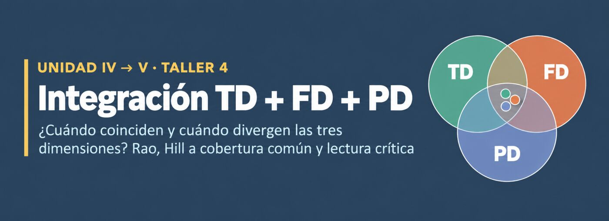
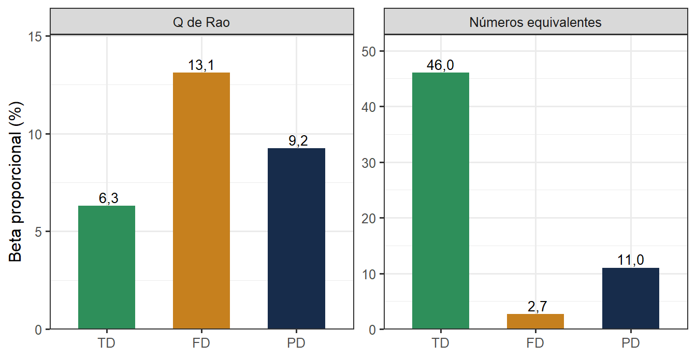
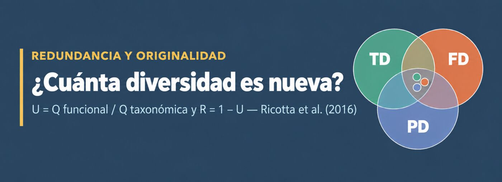
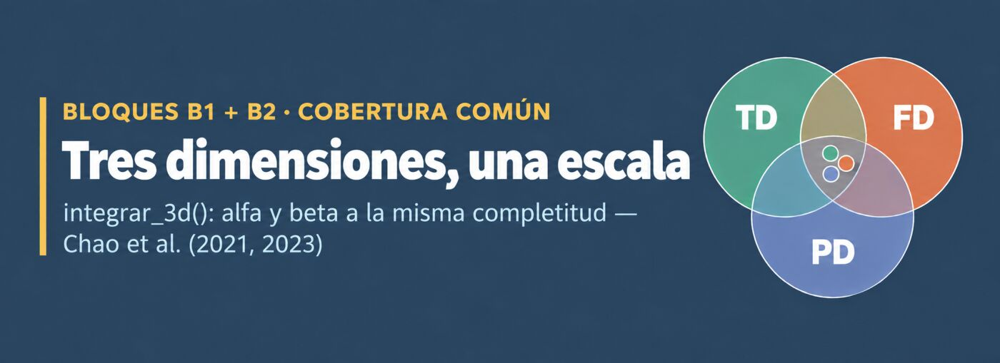
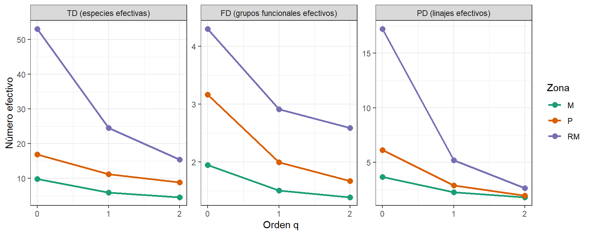
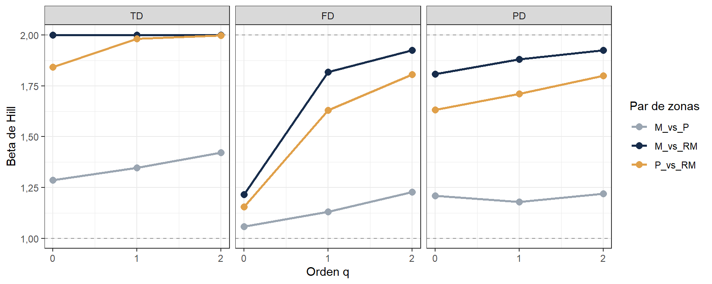
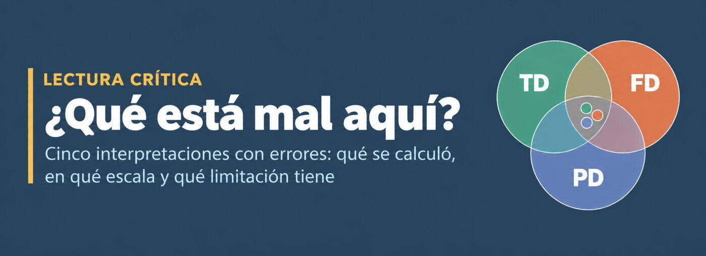

Taller 4. Integración TD + FD + PD
Los datos del caso guiado provienen de Ruiz-Campos et al. (2021). Como en los talleres anteriores, son el modelo metodológico: lo que importa aquí es el flujo de trabajo, que en la semana 14 se aplica a los datos reales de cada grupo (asignación 6.2).
Materiales requeridos para el taller en clase
En el siguiente enlace se puede descargar el archivo comprimido del taller de integración TD + FD + PD, con el mismo caso guiado de peces de México de los talleres anteriores (📰 Taller4_Integracion_PD_FD_PD).
Nota: una vez se descarguen los materiales, se requiere descomprimirlos antes de realizar cualquier procedimiento y seguir las orientaciones del docente para realizar los ejercicios requeridos.
Diapositivas en vivo - Slides.com
 *Pendiente de cargar el taller
*Pendiente de cargar el taller
Los temas de profundización y el cuestionario de refuerzo, están en la guía complementaria y el Cuestionario de profundización al final del taller.
Para tener en cuenta
- Semana 13 · Asignación 5.5 (taller en clase, individual, 10 pts). Cierra la Unidad IV y abre la Unidad V.
- Resultados de aprendizaje:
- RA1: calcular e interpretar TD, FD y PD (alfa y beta) con índices clásicos y números de Hill.
- RA2: diseñar un flujo reproducible que integre abundancias, rasgos y árbol, y comunicar los resultados con criterio ecológico.
- Pregunta de la sesión (microdiseño, semana 13): ¿cuándo coinciden y cuándo divergen las tres dimensiones?, con la partición aditiva de Rao para las tres dimensiones a la vez y una lectura crítica de los resultados.
- Requisito: haber terminado los Talleres 2 (FD) y 3 (PD). En la misma carpeta de este
.qmddeben estardatos.xlsx,arbol_filo_beta.rds,Rao.R,alineador.R,preparar_taller3.R,styles.css,apa.csl,biblio_taller4.biby la carpetafig_portada/(archivo comprimido del taller, compartido en el aula virtual). - Los temas que no caben en la sesión (escala de sitio y gradiente altitudinal, intervalos de confianza, sensibilidad a los rasgos) están en la guía complementaria y el cuestionario de entrenamiento al final del taller.
NotaQué se entrega en la plataforma campus.virtual
El .qmd de esta sesión y su versión renderizada (HTML o PDF), hasta las 23:59 del mismo día. Las secciones 2, 3 y 4 tienen un recuadro ✍️ Tu interpretación: escriba allí, con sus palabras, lo que significa el resultado. La rúbrica de los talleres en clase pide todos los bloques ejecutados y al menos un comentario propio de interpretación.
Mientras se avanza en el taller, el docente realiza la sustentación oral individual del Cuestionario 8 (PD) (≈3 min por estudiante).
Mapa conceptual
ImportanteCoincidir no es “dar el mismo número”
TD, FD y PD no están en la misma escala: un número de especies, uno de grupos funcionales y uno de linajes no se restan entre sí. Por eso, en este taller “coincidir” y “divergir” se leen en dos planos:
- Patrón (orden): ¿las tres dimensiones ordenan igual a las zonas (alfa) o a los pares de zonas (beta)?
- Magnitud relativa: ¿cuánta de la diversidad de especies se traduce en diversidad funcional o filogenética? (redundancia y originalidad).
Cuando el orden coincide pero la magnitud diverge, la diferencia entre dimensiones es el resultado ecológico (devictor2010spatial?).
| Si TD… | …y FD… | …y PD… | Lectura ecológica posible |
|---|---|---|---|
| alta | baja | baja | Muchas especies emparentadas y con roles parecidos: redundancia |
| alta | baja | alta | Linajes distintos que cumplen funciones parecidas: convergencia funcional |
| media | alta | baja | Parientes cercanos con rasgos muy distintos: divergencia de rasgos dentro de linajes |
| β alta | β baja | — | Cambian las especies pero se mantienen los roles: reemplazo funcional |
| β alta | β alta | β alta | Cambian especies, funciones y linajes: recambio completo del ensamblaje |
Ninguna fila es una prueba: son hipótesis que hay que contrastar con la biología del grupo, con la calidad de los rasgos y con el tipo de árbol (Cavender-Bares et al., 2009).
1. Los tres insumos, alineados
TD necesita la matriz de abundancias; FD, además, la distancia funcional; PD, el árbol. Los tres ya se construyeron en los Talleres 2 y 3, así que se reconstruyen en un solo paso con preparar_taller3.R (es el mismo código, sin explicaciones).
Primero, un chequeo de que todos los archivos están en la carpeta del .qmd. Si falta alguno, el render se detiene aquí con un mensaje que dice cuál.
Código
# Archivos que el taller necesita en la MISMA carpeta del .qmd
necesarios <- c("datos.xlsx",
"arbol_filo_beta.rds",
"Rao.R",
"alineador.R",
"preparar_taller3.R",
"biblio_taller4.bib",
"apa.csl",
"styles.css")
faltan <- necesarios[!file.exists(necesarios)] # Los que no encuentra en la carpeta de trabajo
if (length(faltan) > 0) { # Si falta alguno, se detiene con un mensaje claro
stop("Faltan en la carpeta del .qmd: ",
paste(faltan, collapse = ", "),
"\nCarpeta en la que está buscando R: ",
getwd(), call. = FALSE)
}Código
library(tidyverse) # dplyr, tidyr, ggplot2, purrr
library(readxl) # Lectura de .xlsx
library(kableExtra) # Tablas con formato
library(iNEXT.3D) # estimate3D(), DataInfo3D(): Hill alfa (B1)
library(iNEXT.beta3D) # iNEXTbeta3D(): Hill beta (B2)
source("preparar_taller3.R") # Reconstruye biol1, zonas, rasgos.d, arbol_filo, phylo.d, biol_zona, zonas_id, cols_zona
source("Rao.R") # Carga Rao(): partición de Rao para TD, FD y PD
source("alineador.R") # Carga alinear_beta(): pares de zonas alineados con el árbol (B2 de PD)
# Formato común de tablas: coma decimal y encabezado azul
source("formato.R")Antes de integrar, la regla de oro: las tres fuentes deben hablar de las mismas especies, en el mismo orden.
Código
chequeo <- tibble(
Insumo = c("Abundancias (biol1)", "Distancia funcional (rasgos.d)", "Árbol (arbol_filo)"),
Especies = c(ncol(biol1), # Columnas de la matriz = especies
attr(rasgos.d, "Size"), # Tamaño de la matriz de distancias
Ntip(arbol_filo)), # Puntas del árbol
# ¿Las mismas especies, sin importar el orden?
`Mismo conjunto que biol1` = c(TRUE,
setequal(labels(rasgos.d),
colnames(biol1)),
setequal(arbol_filo$tip.label,
colnames(biol1))),
# ¿Y en el mismo orden? Rao() empareja por posición, no por nombre
`Mismo orden que biol1` = c(TRUE,
identical(labels(rasgos.d),
colnames(biol1)),
identical(labels(phylo.d),
colnames(biol1)))
)
tabla(chequeo, "Chequeo de alineación de los tres insumos")| Insumo | Especies | Mismo conjunto que biol1 | Mismo orden que biol1 |
|---|---|---|---|
| Abundancias (biol1) | 87 | TRUE | TRUE |
| Distancia funcional (rasgos.d) | 87 | TRUE | TRUE |
| Árbol (arbol_filo) | 87 | TRUE | TRUE |
Código
stopifnot(all(chequeo$`Mismo conjunto que biol1`), # Chequeo duro: si algo falla, el render se detiene
all(chequeo$`Mismo orden que biol1`))
TipPor qué el árbol se compara a través de
phylo.d
El árbol no tiene “orden” de especies como una matriz; lo que entra a Rao() es su distancia cofenética (phylo.d), que sí debe seguir el orden de biol1. Para los números de Hill, en cambio, iNEXT.3D recibe el árbol completo y busca las especies por nombre.
2. Partición de Rao para TD, FD y PD a la vez (A2)
Rao() recibe la distancia funcional (dfunc) y la filogenética (dphyl) y devuelve las tres dimensiones en una sola llamada (De Bello et al., 2010). Para TD usa una distancia de identidad (1 entre especies distintas, 0 consigo misma).
Se ejecuta dos veces: con la entropía de Rao tal cual (Jost = FALSE, como en los Talleres 2 y 3) y en números equivalentes (Jost = TRUE), que transforma cada valor Q en \(1/(1-Q)\) (jost2007partitioning?).
Código
# Misma función, mismos datos; solo cambia la escala de salida
rao_Q <- Rao(biol_zona, # Especies (filas) x zonas (columnas)
dfunc = rasgos.d, # Distancia funcional (Gower) -> FD
dphyl = phylo.d, # Distancia filogenética (cofenética en [0, 1]) -> PD
weight = FALSE, # Cada zona pesa igual (definición original de Rao)
Jost = FALSE) # Resultado en Q de Rao (entre 0 y 1)
rao_jost <- Rao(biol_zona, dfunc = rasgos.d,
dphyl = phylo.d,
weight = FALSE,
Jost = TRUE) # Resultado en números equivalentes: 1 / (1 - Q)
# Función que resume la partición de un objeto Rao() en una tabla
particion <- function(r, escala) {
map_dfr(c("TD", "FD", "PD"), function(d) tibble( # Una fila por dimensión
Escala = escala,
Dimension = d,
`Alfa media` = r[[d]]$Mean_Alpha, # Diversidad promedio dentro de las zonas
Gamma = r[[d]]$Gamma, # Diversidad de la región (las tres zonas juntas)
`Beta aditiva` = r[[d]]$Beta_add, # Gamma - alfa media
`Beta prop. (%)` = r[[d]]$Beta_prop, # 100 x beta / gamma: % de gamma que se debe a diferencias entre zonas
`Beta mult.` = r[[d]]$Gamma / r[[d]]$Mean_Alpha # Gamma / alfa media
))
}
part_rao <- bind_rows(particion(rao_Q, "Q de Rao"), # Las dos escalas en una tabla
particion(rao_jost, "Números equivalentes"))
part_rao %>%
tabla("Partición alfa-beta-gamma de Rao entre las tres zonas, para TD, FD y PD") %>%
pack_rows(index = table(fct_inorder(part_rao$Escala))) %>% # Agrupa las filas por escala
column_spec(6, bold = TRUE, background = "#FDF3E7") # Resalta la beta proporcional| Escala | Dimension | Alfa media | Gamma | Beta aditiva | Beta prop. (%) | Beta mult. |
|---|---|---|---|---|---|---|
| Q de Rao | ||||||
| Q de Rao | TD | 0,872 | 0,931 | 0,059 | 6,304 | 1,067 |
| Q de Rao | FD | 0,152 | 0,175 | 0,023 | 13,106 | 1,151 |
| Q de Rao | PD | 0,520 | 0,573 | 0,053 | 9,247 | 1,102 |
| Números equivalentes | ||||||
| Números equivalentes | TD | 7,843 | 14,535 | 6,692 | 46,039 | 1,853 |
| Números equivalentes | FD | 1,179 | 1,212 | 0,033 | 2,705 | 1,028 |
| Números equivalentes | PD | 2,083 | 2,341 | 0,258 | 11,033 | 1,124 |
Código
part_rao %>%
mutate(Dimension = factor(Dimension,
levels = c("TD", "FD", "PD")), # Orden fijo de las barras
Escala = factor(Escala,
levels = c("Q de Rao",
"Números equivalentes"))) %>%
ggplot(aes(Dimension, `Beta prop. (%)`,
fill = Dimension)) +
geom_col(width = 0.6,
show.legend = FALSE) +
geom_text(aes(label = dec(`Beta prop. (%)`, 1)),
vjust = -0.3, size = 3.6) + # Valor sobre cada barra
facet_wrap(~ Escala, scales = "free_y") + # Un panel por escala
scale_fill_manual(values = cols_dim) +
scale_y_continuous(labels = coma,
expand = expansion(mult = c(0, 0.15))) +
labs(x = NULL, y = "Beta proporcional (%)") +
theme_bw(base_size = 12)
AdvertenciaLa trampa de la escala: el orden se invierte
Con Q sin transformar, la beta proporcional parece mayor en FD que en PD, y mayor en PD que en TD. En números equivalentes el orden se invierte: TD > PD > FD. ¿Cuál creer?
- La Q de TD es el índice de Gini-Simpson, que se satura cerca de 1 cuando hay muchas especies (aquí, la alfa media ya vale 0,87). Si la alfa está pegada al techo, a la beta no le queda espacio: la beta proporcional de TD queda comprimida artificialmente. Es el problema que (jost2007partitioning?) mostró para Gini-Simpson y Shannon, y por el que De Bello et al. (2010) recomiendan los números equivalentes para comparar dimensiones.
- En la sección 4 se comprueba con los números de Hill a cobertura común, que ponen la beta de las tres dimensiones en la misma escala (1 a 2 para dos zonas).
Regla: la partición de Rao sin transformar sirve para comparar zonas dentro de una misma dimensión; para comparar entre dimensiones hay que pasar a números equivalentes o de Hill.
NotaRevisando una lectura del Taller 3
En el Taller 3 (A2) se leyó que, entre M y RM, “la diferencia es mayor en FD y PD que en TD”. Esa lectura comparaba Q sin transformar entre dimensiones, justo lo que la regla anterior desaconseja. La conclusión que sí se sostiene es la de dentro de cada dimensión: en las tres, M_vs_RM es el par más diferenciado y M_vs_P el menos. Revisar las propias conclusiones con un método más adecuado es parte del trabajo científico, no un error del que avergonzarse.
3. Redundancia y originalidad: cuánta diversidad de especies es “nueva”

Como todas las distancias están entre 0 y 1, la Q funcional o filogenética nunca puede superar a la taxonómica. Que TD sea mayor que FD no es un hallazgo; es matemática. Lo informativo es cuánto menor es. Ricotta et al. (2016) lo expresan como:
\[U = \frac{Q_{\text{FD}}}{Q_{\text{TD}}} \qquad\qquad R = 1 - U\]
donde U (originalidad, uniqueness) es la fracción de la diferencia entre especies que también es una diferencia funcional, y R es la redundancia. Con la distancia filogenética se obtiene lo mismo para PD.
Código
redundancia <- tibble(
Zona = c(zonas_id, "Región (gamma)"),
Q_TD = c(rao_Q$TD$Alpha, rao_Q$TD$Gamma), # Gini-Simpson por zona y de la región
Q_FD = c(rao_Q$FD$Alpha, rao_Q$FD$Gamma), # Rao funcional
Q_PD = c(rao_Q$PD$Alpha, rao_Q$PD$Gamma) # Rao filogenético
) %>%
mutate(U_FD = Q_FD / Q_TD, R_FD = 1 - U_FD, # Originalidad y redundancia funcional
U_PD = Q_PD / Q_TD, R_PD = 1 - U_PD) # Originalidad y redundancia filogenética
tabla(redundancia, "Originalidad (U) y redundancia (R) funcional y filogenética, a partir de la Q de Rao") %>%
column_spec(c(6, 8), bold = TRUE) # Resalta las dos columnas de redundancia| Zona | Q_TD | Q_FD | Q_PD | U_FD | R_FD | U_PD | R_PD |
|---|---|---|---|---|---|---|---|
| M | 0,788 | 0,083 | 0,450 | 0,106 | 0,894 | 0,571 | 0,429 |
| P | 0,894 | 0,154 | 0,489 | 0,172 | 0,828 | 0,547 | 0,453 |
| RM | 0,935 | 0,219 | 0,620 | 0,234 | 0,766 | 0,663 | 0,337 |
| Región (gamma) | 0,931 | 0,175 | 0,573 | 0,188 | 0,812 | 0,615 | 0,385 |
NotaQué dice la tabla
- La redundancia funcional es muy alta en las tres zonas (R entre 0,77 y 0,89): muchas especies comparten nivel trófico y hábitos de dieta. Recordar que en este caso guiado tres rasgos morfológicos tienen valores de relleno (Taller 2), lo cual infla la redundancia (la guía complementaria lo cuantifica).
- La redundancia filogenética es mucho menor: dos especies tomadas al azar suelen pertenecer a linajes bastante distintos aunque cumplan funciones parecidas.
Mes la zona más redundante en FD: pocas estrategias tróficas sostienen a casi todos sus individuos.RMes la menos redundante en las dos dimensiones.
4. Las tres dimensiones en números de Hill, a la misma cobertura (B1 + B2)

Rao no corrige el esfuerzo de muestreo (M tiene 24 sitios, P 16 y RM solo 2). Los números de Hill de iNEXT.3D y iNEXT.beta3D sí lo hacen, y además expresan las tres dimensiones como números efectivos (de especies, de grupos funcionales y de linajes) a la misma cobertura (Chao et al., 2021; Chao et al., 2023).
En lugar de repetir seis llamadas casi iguales, se escribe una función que hace todo el flujo. Es la misma lógica de los Talleres 2 y 3, empaquetada para reutilizarla en el estudio de caso.
Código
# integrar_3d(): TD, FD y PD alfa y beta (números de Hill) a una cobertura común
# abund : data.frame especies (filas) x unidades (columnas), con nombres de especie en rownames
# dist_func : objeto 'dist' con la distancia funcional entre las mismas especies
# arbol : objeto 'phylo' cuyas puntas son las mismas especies
# q, nboot : órdenes de Hill y réplicas bootstrap (0 en clase; >= 50 para el informe)
# cut : número de umbrales de distancia para la FD (AUC), como en el Taller 2
integrar_3d <- function(abund, dist_func, arbol, q = c(0, 1, 2), nboot = 0, cut = 15) {
# 0. Chequeos duros: mismas especies en las tres fuentes
stopifnot(setequal(rownames(abund),
labels(dist_func)),
setequal(rownames(abund),
arbol$tip.label))
dmat <- as.matrix(dist_func)[rownames(abund),
rownames(abund)] # Distancia en el orden de abund
# 1. ALFA (B1). Cobertura común = la menor cobertura observada entre las unidades
info <- DataInfo3D(abund, diversity = "TD", datatype = "abundance") # n, S.obs y SC(n) por unidad
c_alf <- min(info$`SC(n)`) # La unidad menos completa fija el nivel
alfa <- bind_rows(
estimate3D(abund, diversity = "TD",
q = q, datatype = "abundance",
base = "coverage",
level = c_alf,
nboot = nboot) %>% # Especies efectivas
transmute(Unidad = Assemblage,
Order.q, Dimension = "TD",
Valor = qTD),
estimate3D(abund, diversity = "FD",
q = q, datatype = "abundance",
base = "coverage",
level = c_alf,
nboot = nboot,
FDdistM = dmat,
FDtype = "AUC",
FDcut_number = cut) %>% # Grupos funcionales efectivos
transmute(Unidad = Assemblage,
Order.q, Dimension = "FD",
Valor = qFD),
estimate3D(abund, diversity = "PD",
q = q, datatype = "abundance",
base = "coverage",
level = c_alf,
nboot = nboot,
PDtree = arbol,
PDtype = "meanPD") %>% # Linajes efectivos
transmute(Unidad = Assemblage,
Order.q,
Dimension = "PD",
Valor = qPD)
)
# 2. BETA (B2). Una matriz de dos columnas por cada par de unidades
pares <- combn(colnames(abund),
2, simplify = FALSE) %>%
set_names(map_chr(., paste,
collapse = "_vs_")) %>% # Nombres tipo "M_vs_P"
purrr::map(\(p) abund[, p, drop = FALSE])
# Cobertura común para beta = la menor cobertura OBSERVADA entre los pares (no el 0,5 de la curva)
c_beta <- iNEXTbeta3D(pares,
diversity = "TD",
datatype = "abundance",
base = "coverage",
nboot = 0) %>%
map_dfr(~ .x$beta) %>%
filter(Method == "Observed_SC(n, alpha)") %>% # Fila de la cobertura observada de cada par
pull(SC) %>%
min()
ali <- alinear_beta(pares, arbol) # Para PD: pares y árbol con las mismas especies
stopifnot(ali$report$species_kept == ali$report$species_union) # Ninguna especie perdida al alinear
# Extrae de cada par la beta (1 a 2) y la disimilitud 1-C (0 a 1)
extraer <- function(res, dim) map_dfr(names(res), \(p) tibble(
Par = p, Order.q = res[[p]]$beta$Order.q, Dimension = dim,
Beta = res[[p]]$beta$Beta, # 1 (idénticas) a 2 (nada en común)
Disimilitud = res[[p]]$`1-C`$Dissimilarity)) # 0 a 1, tipo Sørensen
beta <- bind_rows(
iNEXTbeta3D(pares,
diversity = "TD",
q = q,
datatype = "abundance",
base = "coverage",
level = c_beta,
nboot = nboot) %>%
extraer("TD"),
iNEXTbeta3D(pares,
diversity = "FD",
q = q,
datatype = "abundance",
base = "coverage",
level = c_beta,
nboot = nboot,
FDdistM = dmat,
FDtype = "AUC",
FDcut_number = cut) %>%
extraer("FD"),
iNEXTbeta3D(ali$pairs_aligned,
diversity = "PD",
q = q,
datatype = "abundance",
base = "coverage",
level = c_beta,
nboot = nboot,
PDtree = ali$tree_aligned,
PDtype = "meanPD") %>%
extraer("PD")
)
# Devuelve todo en una lista: tablas largas + coberturas usadas + reportes
list(alfa = alfa,
beta = beta,
cobertura_alfa = c_alf,
cobertura_beta = c_beta,
info = info,
reporte_arbol = ali$report)
}Código
int3d <- integrar_3d(biol_zona, # Abundancias por zona (especies x zonas)
rasgos.d, # Distancia de Gower del Taller 2
arbol_filo) # Árbol armonizado del Taller 3
c(Alfa = int3d$cobertura_alfa, Beta = int3d$cobertura_beta) # Coberturas comunes usadas Alfa Beta
0.9614576 0.9964068 4.1 Alfa: las tres dimensiones a cobertura común
Código
alfa_ancha <- int3d$alfa %>%
pivot_wider(names_from = Dimension,
values_from = Valor) %>% # Una columna por dimensión
mutate(`FD/TD` = FD / TD, # Fracción de las especies efectivas que son grupos funcionales efectivos
`PD/TD` = PD / TD) %>% # ... y que son linajes efectivos
arrange(Order.q, Unidad)
tabla(alfa_ancha, paste0("Diversidad alfa en números de Hill a cobertura común (",
dec(int3d$cobertura_alfa, 4), ")"),
digits = 2) %>%
pack_rows(index = table(paste("q =", alfa_ancha$Order.q))) # Agrupa las filas por orden q| Unidad | Order.q | TD | FD | PD | FD/TD | PD/TD |
|---|---|---|---|---|---|---|
| q = 0 | ||||||
| M | 0 | 9,75 | 1,95 | 3,66 | 0,20 | 0,38 |
| P | 0 | 16,84 | 3,16 | 6,12 | 0,19 | 0,36 |
| RM | 0 | 53,00 | 4,30 | 17,22 | 0,08 | 0,32 |
| q = 1 | ||||||
| M | 1 | 5,87 | 1,51 | 2,24 | 0,26 | 0,38 |
| P | 1 | 11,14 | 1,99 | 2,87 | 0,18 | 0,26 |
| RM | 1 | 24,47 | 2,91 | 5,18 | 0,12 | 0,21 |
| q = 2 | ||||||
| M | 2 | 4,49 | 1,39 | 1,80 | 0,31 | 0,40 |
| P | 2 | 8,82 | 1,67 | 1,94 | 0,19 | 0,22 |
| RM | 2 | 15,39 | 2,58 | 2,63 | 0,17 | 0,17 |
Código
int3d$alfa %>%
mutate(Dimension = factor(Dimension, levels = c("TD", "FD", "PD"),
labels = c("TD (especies efectivas)", "FD (grupos funcionales efectivos)",
"PD (linajes efectivos)"))) %>%
ggplot(aes(Order.q, Valor, color = Unidad)) +
geom_line(linewidth = 0.9) + geom_point(size = 2.6) +
facet_wrap(~ Dimension, scales = "free_y") + # Escala propia por dimensión: las unidades no se mezclan
scale_color_manual(values = cols_zona) +
scale_x_continuous(breaks = 0:2) +
scale_y_continuous(labels = coma) +
labs(x = "Orden q",
y = "Número efectivo",
color = "Zona") +
theme_bw(base_size = 11)
NotaLectura de la alfa
- Coinciden en el orden: en las tres dimensiones y en los tres órdenes de q,
RM>P>M. Ahora a cobertura común, así que no es un efecto del esfuerzo. - Divergen en la magnitud: con q = 0,
RMtiene unas 5,4 veces más especies efectivas queM, pero solo 2,2 veces más grupos funcionales efectivos y 4,7 veces más linajes efectivos. - La columna
FD/TDdeRMcon q = 0 es la más baja de la tabla: sus especies raras agregan linajes (PD/TD se mantiene) pero casi no agregan funciones. Es la firma de la convergencia funcional de la segunda fila del mapa conceptual: peces marino-estuarinos de familias distintas con dietas parecidas.
4.2 Beta: las tres dimensiones en la misma escala
Para dos zonas, la beta de Hill va de 1 (comparten todo) a 2 (no comparten nada) en las tres dimensiones. Esta es la comparación entre dimensiones que la partición de Rao sin transformar no permitía.
Código
beta_ancha <- int3d$beta %>%
dplyr::select(-Disimilitud) %>% # Aquí solo se usa la beta (1 a 2)
pivot_wider(names_from = Dimension, values_from = Beta) %>% # Una columna por dimensión
arrange(Order.q, Par)
tabla(beta_ancha, paste0("Beta de Hill entre pares de zonas a cobertura común (",
dec(int3d$cobertura_beta, 4), ")"),
digits = 2) %>%
pack_rows(index = table(paste("q =", beta_ancha$Order.q)))| Par | Order.q | TD | FD | PD |
|---|---|---|---|---|
| q = 0 | ||||
| M_vs_P | 0 | 1,29 | 1,06 | 1,21 |
| M_vs_RM | 0 | 2,00 | 1,22 | 1,81 |
| P_vs_RM | 0 | 1,84 | 1,16 | 1,63 |
| q = 1 | ||||
| M_vs_P | 1 | 1,35 | 1,13 | 1,18 |
| M_vs_RM | 1 | 2,00 | 1,82 | 1,88 |
| P_vs_RM | 1 | 1,98 | 1,63 | 1,71 |
| q = 2 | ||||
| M_vs_P | 2 | 1,42 | 1,23 | 1,22 |
| M_vs_RM | 2 | 2,00 | 1,93 | 1,93 |
| P_vs_RM | 2 | 2,00 | 1,81 | 1,80 |
Código
int3d$beta %>%
mutate(Dimension = factor(Dimension,
levels = c("TD", "FD", "PD"))) %>%
ggplot(aes(Order.q, Beta, color = Par)) +
geom_hline(yintercept = c(1, 2),
linetype = "dashed",
color = "grey60") + # Límites teóricos para dos zonas
geom_line(linewidth = 0.9) +
geom_point(size = 2.6) +
facet_wrap(~ Dimension) + # Misma escala en los tres paneles
scale_x_continuous(breaks = 0:2) +
scale_y_continuous(limits = c(1, 2),
labels = coma) +
scale_color_manual(values = cols_par) +
labs(x = "Orden q", y = "Beta de Hill",
color = "Par de zonas") +
theme_bw(base_size = 11)
ImportanteLectura de la beta
- Coinciden en el orden de los pares: en las tres dimensiones,
M_vs_RM≥P_vs_RM>M_vs_P. - Divergen en la magnitud, sobre todo con q = 0:
MyRMno comparten ninguna especie (beta TD = 2), pero la beta FD con q = 0 es apenas 1,22: muchas especies de la desembocadura, sobre todo las raras, repiten funciones que ya existen río arriba. Es un reemplazo funcional (cuarta fila del mapa conceptual). - La PD queda en medio: las especies que cambian pertenecen en gran parte a linajes distintos.
- Con q = 2 (especies dominantes) las tres dimensiones casi se igualan cerca de 2: los peces que dominan en
My enRMdifieren en todo. - Esto confirma la sección 2: en una escala común, la beta taxonómica es la mayor en todos los pares y órdenes q, y la funcional la menor con q = 0 y 1 (con q = 2, FD y PD prácticamente se igualan). La partición de Rao sin transformar sugería lo contrario.
5. Matriz de coincidencias y divergencias
Con las tablas anteriores se puede automatizar la pregunta de la sesión. Para cada orden q, se compara el orden que cada dimensión asigna a las zonas (alfa) y a los pares de zonas (beta).
Código
# Convierte un vector de valores en un texto con el orden de mayor a menor, p. ej. "RM > P > M"
orden_txt <- function(valor, nombre) paste(nombre[order(-valor)], collapse = " > ")
matriz <- bind_rows(
int3d$alfa %>% group_by(Escala = "Alfa",
Order.q,
Dimension) %>%
summarise(Orden = orden_txt(Valor, Unidad),
.groups = "drop"), # Orden de las zonas
int3d$beta %>% group_by(Escala = "Beta",
Order.q,
Dimension) %>%
summarise(Orden = orden_txt(Beta, Par),
.groups = "drop") # Orden de los pares de zonas
) %>%
pivot_wider(names_from = Dimension,
values_from = Orden) %>% # Una columna por dimensión
mutate(`¿Coinciden?` = if_else(TD == FD & TD == PD, # Coinciden solo si los tres textos son iguales
"Coinciden", "Divergen")) %>%
dplyr::select(Escala, Order.q, TD, FD, PD, `¿Coinciden?`)
tabla(matriz, "¿Las tres dimensiones ordenan igual las zonas (alfa) y los pares de zonas (beta)?") %>%
column_spec(6, bold = TRUE,
color = if_else(matriz$`¿Coinciden?` == "Coinciden",
"#1B7F79", "#B03A2E"))| Escala | Order.q | TD | FD | PD | ¿Coinciden? |
|---|---|---|---|---|---|
| Alfa | 0 | RM > P > M | RM > P > M | RM > P > M | Coinciden |
| Alfa | 1 | RM > P > M | RM > P > M | RM > P > M | Coinciden |
| Alfa | 2 | RM > P > M | RM > P > M | RM > P > M | Coinciden |
| Beta | 0 | M_vs_RM > P_vs_RM > M_vs_P | M_vs_RM > P_vs_RM > M_vs_P | M_vs_RM > P_vs_RM > M_vs_P | Coinciden |
| Beta | 1 | M_vs_RM > P_vs_RM > M_vs_P | M_vs_RM > P_vs_RM > M_vs_P | M_vs_RM > P_vs_RM > M_vs_P | Coinciden |
| Beta | 2 | M_vs_RM > P_vs_RM > M_vs_P | M_vs_RM > P_vs_RM > M_vs_P | M_vs_RM > P_vs_RM > M_vs_P | Coinciden |
En el caso guiado el orden coincide en todas las filas. La divergencia, entonces, hay que buscarla en la magnitud: ¿en qué par y en qué orden q se separan más las dimensiones?
Código
beta_ancha %>%
mutate(`TD - FD` = TD - FD, # Cuánto menos difieren las funciones que las especies
`TD - PD` = TD - PD, # Cuánto menos difieren los linajes que las especies
`PD - FD` = PD - FD) %>% # Cuánto más difieren los linajes que las funciones
arrange(desc(`TD - FD`)) %>% # Primero el par y el q con la mayor brecha
tabla("Brecha entre dimensiones en la beta de Hill, ordenada de mayor a menor TD - FD", digits = 2) %>%
row_spec(1, bold = TRUE, background = "#FDECEC")| Par | Order.q | TD | FD | PD | TD - FD | TD - PD | PD - FD |
|---|---|---|---|---|---|---|---|
| M_vs_RM | 0 | 2,00 | 1,22 | 1,81 | 0,78 | 0,19 | 0,59 |
| P_vs_RM | 0 | 1,84 | 1,16 | 1,63 | 0,69 | 0,21 | 0,48 |
| P_vs_RM | 1 | 1,98 | 1,63 | 1,71 | 0,35 | 0,27 | 0,08 |
| M_vs_P | 0 | 1,29 | 1,06 | 1,21 | 0,23 | 0,08 | 0,15 |
| M_vs_P | 1 | 1,35 | 1,13 | 1,18 | 0,22 | 0,17 | 0,05 |
| M_vs_P | 2 | 1,42 | 1,23 | 1,22 | 0,20 | 0,20 | -0,01 |
| P_vs_RM | 2 | 2,00 | 1,81 | 1,80 | 0,19 | 0,20 | -0,01 |
| M_vs_RM | 1 | 2,00 | 1,82 | 1,88 | 0,18 | 0,12 | 0,06 |
| M_vs_RM | 2 | 2,00 | 1,93 | 1,93 | 0,07 | 0,07 | 0,00 |
NotaCómo usar esta matriz
Si una fila dice Divergen, revisar primero si las diferencias son reales: con nboot = 0 no hay intervalos de confianza y dos valores muy cercanos pueden cambiar de orden por azar (Ejercicio 2 y sección 2 de la guía complementaria). Si dice Coinciden, la conversación pasa a la magnitud (secciones 3 y 4): ahí suele estar la ecología. El cuestionario de entrenamiento trae un caso en el que el orden sí diverge.
6. Lectura crítica: cinco interpretaciones con errores

En grupos de dos o tres, identificar qué está mal en cada afirmación y reescribirla correctamente. Todas usan resultados reales de este taller.
- “En
RM, la alfa de Rao taxonómica es 0,94 y la funcional 0,22. Por lo tantoRMtiene más diversidad taxonómica que funcional.” - “Según la partición de Rao, la beta proporcional es 13 % en FD y 6 % en TD: las zonas del río se diferencian más por sus funciones que por sus especies.”
- “La beta taxonómica entre
MyRMes 2 y la filogenética casi 2. Las tres dimensiones dicen lo mismo, así que en el estudio de caso basta con calcular TD.” - “
Mes la zona con mayor redundancia funcional (R = 0,89); por lo tanto, es la zona que mejor resistiría la pérdida de especies.” - “Como
RMes la zona más diversa en las tres dimensiones, es la que más aporta a la diversidad de la cuenca y la única que habría que proteger.”
TipQué está mal en cada una (abrir después de discutir)
- Con distancias entre 0 y 1, la Q funcional nunca supera a la taxonómica: la comparación no informa nada. Lo informativo es la originalidad (U = 0,22/0,94 ≈ 0,23) o la redundancia (R ≈ 0,77), y su comparación con las otras zonas.
- Compara Q sin transformar entre dimensiones. La Q de TD (Gini-Simpson) está saturada y comprime su beta. En números equivalentes y en números de Hill el orden se invierte: la beta taxonómica pasa a ser la mayor y la funcional la menor.
- Coinciden en el orden, pero no en la magnitud: con q = 0 la beta funcional es mucho menor que la taxonómica (reemplazo funcional). Esa diferencia es justamente lo que TD sola no muestra.
- La redundancia de Rao describe cuánto se parecen, en promedio, los pares de individuos presentes; no predice qué pasa cuando se pierden especies. La resistencia depende de cuáles se pierden (dominantes o raras), de si las especies redundantes responden igual a la perturbación (rasgos de respuesta, no solo de efecto) y, en este caso, de rasgos con valores de relleno que inflan la redundancia.
- Tres problemas:
RMtiene solo 2 sitios (la alfa a cobertura común confirma el orden, pero con una sola zona estuarina); la contribución a la diversidad regional depende también de la beta y de la complementariedad (Maporta linajes de agua dulce queRMno tiene); y priorizar áreas exige criterios que van más allá de la diversidad (amenazas, endemismos, conectividad).
7. Del caso guiado al estudio de caso (6.2, semana 14)
integrar_3d() no depende de los peces de México. Para aplicarla a la comunidad del grupo (peces arrecifales, bosque seco, hormigas u otro grupo del Caribe colombiano) se necesitan los mismos tres insumos, con los mismos chequeos:
Código
# --- Plantilla para el estudio de caso (no se ejecuta en este taller) ---
source("Rao.R"); source("alineador.R")
abund_ec <- ... # data.frame: especies (filas) x unidades a comparar (columnas)
rasgos_ec <- ... # data.frame: especies (filas) x rasgos, mismas especies que abund_ec
dist_ec <- FD::gowdis(rasgos_ec[rownames(abund_ec), ]) # Distancia funcional (declarar binarios asimétricos si los hay)
arbol_ec <- ... # 'phylo' publicado o construido desde la clasificación (Ficha del árbol)
# Chequeos: setdiff() en ambos sentidos debe dar vacío
setdiff(rownames(abund_ec), arbol_ec$tip.label) # Especies sin punta en el árbol
setdiff(arbol_ec$tip.label, rownames(abund_ec)) # Puntas sin especie en la matriz
# Distancia filogenética en el orden de la matriz y reescalada a [0, 1]
phy_ec <- cophenetic(arbol_ec)[rownames(abund_ec), rownames(abund_ec)]
phy_ec <- as.dist(phy_ec / max(phy_ec))
# A2: partición de Rao en las tres dimensiones (números equivalentes para comparar entre dimensiones)
rao_ec <- Rao(abund_ec,
dfunc = dist_ec,
dphyl = phy_ec,
weight = FALSE,
Jost = TRUE)
# B1 + B2: Hill a cobertura común (nboot >= 50 para el informe)
set.seed(2026) # El bootstrap usa números aleatorios
int_ec <- integrar_3d(abund_ec, dist_ec, arbol_ec, nboot = 50)
ImportanteAntes de correr
integrar_3d() con datos propios
- Unidades con datos suficientes: cada columna de
abund_ecdebe tener individuos de varias especies; unidades con una sola especie no permiten beta ni cobertura fiables. Si las hay, agrupar sitios en unidades mayores (como aquí se agruparon en zonas). - Datos de incidencia: si la base es de presencia/ausencia, cambiar
datatype = "abundance"por"incidence_raw"y revisar la estructura que exigeiNEXT.3D. - Rasgos: declarar cuáles son cuantitativos y cuáles categóricos, y si alguno tiene valores de relleno (inflan la redundancia, como en este caso guiado).
- Árbol: declarar si es taxonómico o molecular; si es taxonómico, la PD mide distinción taxonómica.
- Bases de fuera del Caribe colombiano: agregar una frase que explique por qué el flujo es transferible a una comunidad del Caribe y qué cambiaría.
- Reproducibilidad: al final del documento,
sessionInfo()y la semilla (set.seed()) si hay bootstrap.
Ejercicios de práctica dirigida (individual)
Ejercicio 1 — Partición de Rao con ponderación (A2)
Repetir la sección 2 con weight = TRUE (corrección de Villéger y Mouillot, que pondera cada zona por su abundancia total). ¿Cambia el orden TD > PD > FD en números equivalentes? ¿Por qué podría cambiar, sabiendo que M tiene 13.166 individuos y RM 414?
Ejercicio 2 — ¿Las diferencias son reales? (B1 + B2)
Ejecutar integrar_3d(biol_zona, rasgos.d, arbol_filo, nboot = 20) (tarda unos 3 a 4 minutos) y revisar los intervalos de confianza de la beta (LCL y UCL en las salidas de iNEXTbeta3D(); puede modificar extraer() para conservarlos). ¿La beta FD con q = 0 de M_vs_RM se separa de la beta TD? La sección 2 de la guía complementaria trae la solución completa.
Material de apoyo y cuestionario

Para repasar y profundizar después de la sesión:
Guía complementaria · Integración TD + FD + PD — los temas que no caben en la sesión: la escala de sitio y el gradiente altitudinal, intervalos de confianza para las brechas entre dimensiones, cuánto cambia la integración si se quitan los rasgos de relleno, las disimilitudes en escala 0–1 y una tabla de integración lista para el documento del estudio de caso.
Cuestionario de entrenamiento · Integración TD + FD + PD — con peces simulados de manglar, pastos marinos y arrecife del Caribe colombiano, en un caso donde las tres dimensiones sí cuentan historias distintas. Es la práctica más cercana a lo que pide la asignación 6.2.
Código
sessionInfo() # Versiones de R y paquetes con que se renderizó este documentoR version 4.5.1 (2025-06-13 ucrt)
Platform: x86_64-w64-mingw32/x64
Running under: Windows 10 x64 (build 19045)
Matrix products: default
LAPACK version 3.12.1
locale:
[1] LC_COLLATE=Spanish_Spain.utf8 LC_CTYPE=Spanish_Spain.utf8
[3] LC_MONETARY=Spanish_Spain.utf8 LC_NUMERIC=C
[5] LC_TIME=Spanish_Spain.utf8
time zone: America/Bogota
tzcode source: internal
attached base packages:
[1] stats graphics grDevices utils datasets methods base
other attached packages:
[1] FD_1.0-12.3 geometry_0.5.2 ade4_1.7-23 picante_1.8.2
[5] nlme_3.1-168 vegan_2.7-1 permute_0.9-8 phytools_2.5-2
[9] maps_3.4.3 ape_5.8-1 iNEXT.beta3D_1.0.2 iNEXT.3D_1.0.10
[13] kableExtra_1.4.0 readxl_1.4.5 lubridate_1.9.4 forcats_1.0.0
[17] stringr_1.5.2 dplyr_1.1.4 purrr_1.2.2 readr_2.1.5
[21] tidyr_1.3.1 tibble_3.3.0 ggplot2_4.0.3 tidyverse_2.0.0
loaded via a namespace (and not attached):
[1] tidyselect_1.2.1 viridisLite_0.4.2 farver_2.1.2
[4] S7_0.2.0 optimParallel_1.0-3 fastmap_1.2.0
[7] lazyeval_0.2.2 combinat_0.0-9 digest_0.6.37
[10] timechange_0.3.0 lifecycle_1.0.5 cluster_2.1.8.1
[13] tidytree_0.4.6 magrittr_2.0.3 compiler_4.5.1
[16] rlang_1.1.6 tools_4.5.1 igraph_2.1.4
[19] yaml_2.3.10 phangorn_2.12.1 knitr_1.50
[22] clusterGeneration_1.3.8 labeling_0.4.3 htmlwidgets_1.6.4
[25] scatterplot3d_0.3-44 mnormt_2.1.1 plyr_1.8.9
[28] xml2_1.3.8 RColorBrewer_1.1-3 abind_1.4-8
[31] expm_1.0-1 numDeriv_2016.8-1.1 withr_3.0.2
[34] grid_4.5.1 future_1.70.0 globals_0.19.1
[37] scales_1.4.0 iterators_1.0.14 MASS_7.3-65
[40] cli_3.6.5 rmarkdown_2.30 generics_0.1.4
[43] rstudioapi_0.17.1 future.apply_1.20.0 reshape2_1.4.4
[46] tzdb_0.5.0 magic_1.6-1 splines_4.5.1
[49] parallel_4.5.1 cellranger_1.1.0 yulab.utils_0.2.1
[52] vctrs_0.6.5 Matrix_1.7-3 jsonlite_2.0.0
[55] hms_1.1.4 listenv_0.10.0 systemfonts_1.3.2
[58] foreach_1.5.2 glue_1.8.0 parallelly_1.45.1
[61] codetools_0.2-20 DEoptim_2.2-8 stringi_1.8.7
[64] gtable_0.3.6 quadprog_1.5-8 pillar_1.11.1
[67] rappdirs_0.3.3 htmltools_0.5.8.1 R6_2.6.1
[70] textshaping_1.0.1 doParallel_1.0.17 evaluate_1.0.5
[73] lattice_0.22-7 phyclust_0.1-34 fastmatch_1.1-6
[76] Rcpp_1.1.0 svglite_2.2.1 coda_0.19-4.1
[79] mgcv_1.9-3 xfun_0.52 fs_1.6.6
[82] pkgconfig_2.0.3